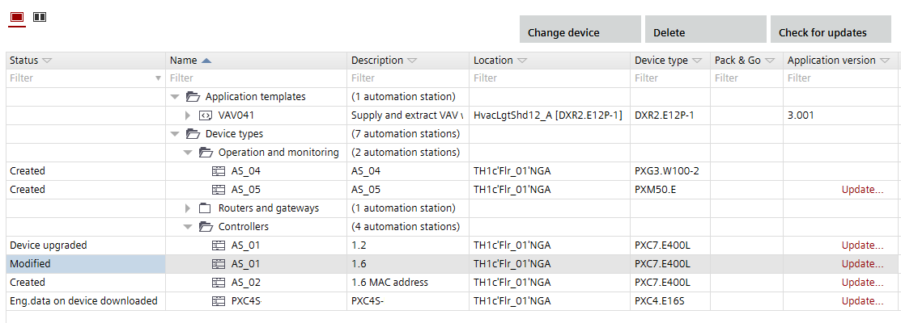
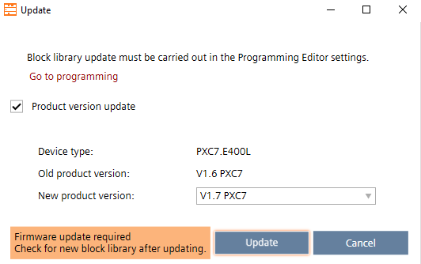

更新设备版本
此过程描述如何将主控制设备更新到提供更多功能和特性的新产品版本。

检查Programming用于块库更新的编辑器。
Programming

Update devices
- A newer version of the device is available.
- Open Building > Application & device overview.
- Click Check for updates.
- The system checks for new versions. If a new version is found, Update displays in the Version column of the list.
- Click Update for each item you want to update.
- The Update dialog box opens. A message displays details about the update, e.g. the type version numbers. An info might display telling you that a firmware update is required.

- Select the new version from the New type version drop-down list.
- Click Update.
- The device is updated to the selected version.
- The notification classes settings must be updated and checked.
Upgrading the notification classes in an existing project from SVS300 to SVS400